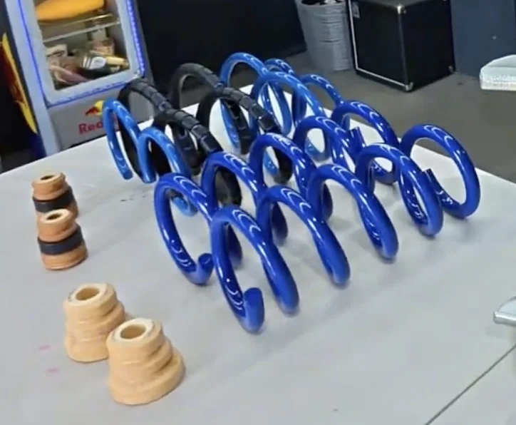
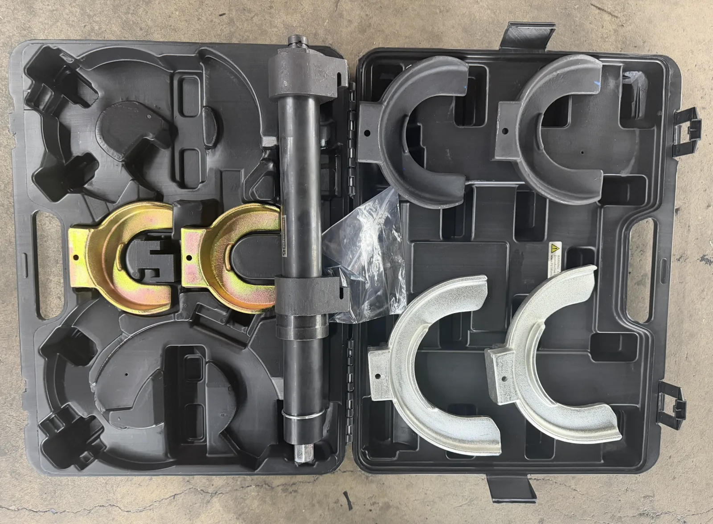

FORUMS · FORD · 2024 MUSTANG GT S650
Install Steeda minimum drop lowering springs on a 2024 Ford Mustang GT (S650): the part we bought, the tools, every step, and the torque specs.
What Steeda lists. On an S650 coupe, Steeda lists a 0.75 in front drop and a 0.375 in rear drop. Steeda notes the amount can vary by vehicle package and trim. The springs are sold for Mustangs with MagneRide suspension, 2015 to 2026.
Cost. The springs ran $419.95 at the time we bought them.
| PART | SOURCE | PRICE |
|---|---|---|
| Steeda Mustang Minimum Drop MagneRide Lowering Springs, Linear (2015-2026) Steeda part no. 555-8225 | Steeda | $419.95 |

A spring compressor and a solid way to support the rear subframe are what make this job safe.

Follow in order.
Raise the front so both tires are off the ground and take the wheels off. Unbolt the caliper (two 15mm bolts), hang it with a caliper hook, and remove the rotor.
Hold the hex flat with a 17mm wrench and loosen the 18mm end link nut. Both front wheels must be off the ground, or a one-sided load pre-tensions the bar and the nut will not come off. Unclip the ABS harness clips from the strut body.
Loosen the two 24mm knuckle nuts. Thread each nut on flush with the bolt end before you hit it, so the hammer does not damage the threads when you tap the splined bolt out.
Support the strut from below and take off the three 15mm strut tower nuts under the hood.
Mount the strut in the spring compressor. Hold the shaft with a 10mm and back off the 13/16 in top nut with the pass-through ratchet. Move the upper mount bearing, dust boot, and bump stop to the new spring.
Seat the new spring in the rubber isolators with the coil ends in the indexing notches. Reinstall the strut, then torque the tower nuts to 46 lb-ft and the knuckle bolts to 184 lb-ft.
Unclip the ABS lines and unbolt the brake line bracket holders (10mm and 13mm) so the lines have slack when the subframe drops.
Put a jack under the subframe or knuckle. Take out the upper shock bolts (18mm) and the lower shock bolt (15mm), then remove the shock.
Remove the two 13mm bracket bolts and the 21mm main subframe bolts. Lower the jack slowly until the subframe hinges down far enough to pull the factory spring and rubber isolators. Do one side at a time: dropping both sides lets the subframe shift out of alignment with the chassis.
Move the top and bottom isolators to the new spring and butt the coil tips against the isolator grooves. Set the spring in and check that it clears the frame rails.
Jack the subframe back into position and hand-thread the bolts first so they do not cross-thread. Torque the 21mm main bolts to 129 to 140 lb-ft, the 13mm bracket bolts to 40 to 41 lb-ft, and the shock bolts to 66 to 70 lb-ft. Reattach the brake line brackets and ABS clips.
Use a calibrated torque wrench. Values come from published S550 and S650 install guides. Confirm them against Ford service data before you rely on them.
| FASTENER | QTY | TORQUE |
|---|---|---|
| Knuckle-to-strut bolts (splined) | 2 | 250 N·m / 184 lb-ft |
| Strut tower nuts | 3 | 62 N·m / 46 lb-ft |
| FASTENER | QTY | TORQUE |
|---|---|---|
| Main subframe bolts (21mm) | 175 to 190 N·m / 129 to 140 lb-ft | |
| Subframe support bracket bolts (13mm) | 2 | 54 to 56 N·m / 40 to 41 lb-ft |
| Upper and lower shock mount bolts | 90 to 95 N·m / 66 to 70 lb-ft |
| FASTENER | QTY | TORQUE |
|---|---|---|
| Wheel lug nuts, star pattern | 203 N·m / 150 lb-ft |
This guide records how we did the job on one car. You are working under a vehicle and with compressed springs, so support it properly, use a spring compressor correctly, and confirm torque values against Ford service data. Would you rather have us do it? Request a consultation or see our mechanical services.
What we used for this job.
Use a calibrated torque wrench. Values come from published S550 and S650 install guides. Confirm them against Ford service data before you rely on them.